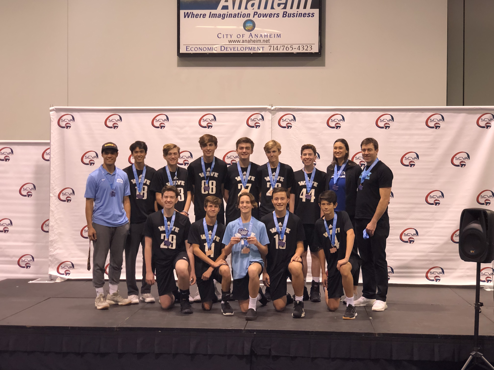
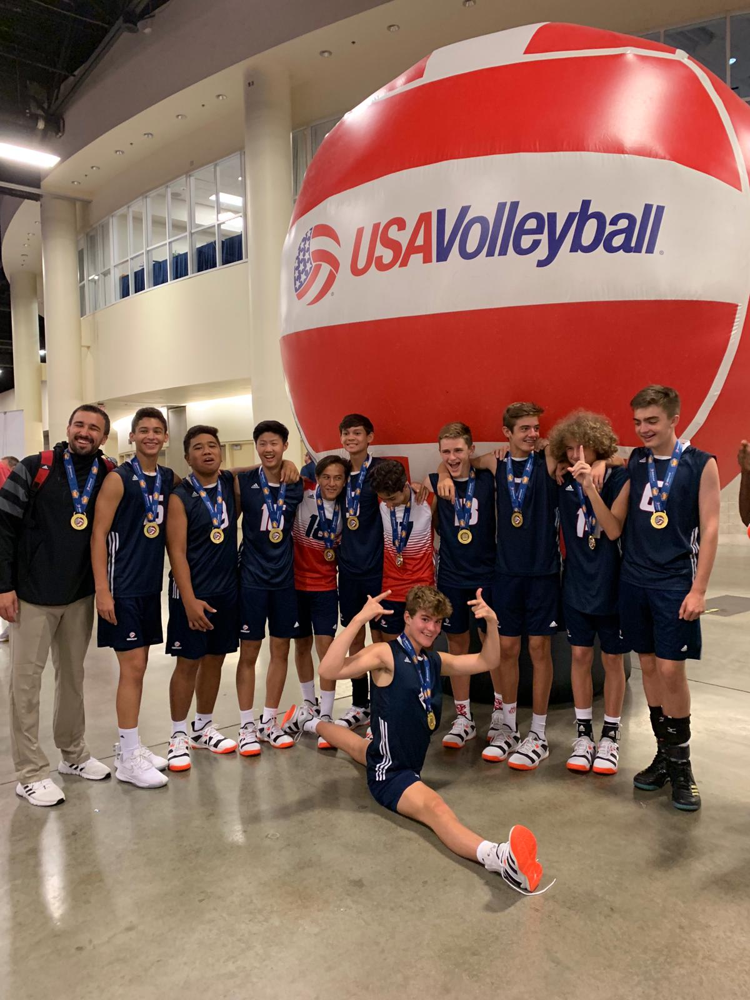

The sports I play have taught me about leadership. I have been in leadership roles on a few teams, and I have had good experiences in these roles. The Habit of Mind I connect this to is persisting because even if I am down big in a game, I still have to persist and try to get back in it.
https://wavevb.com/coaches/
Wave

Wave

Team USA
Back